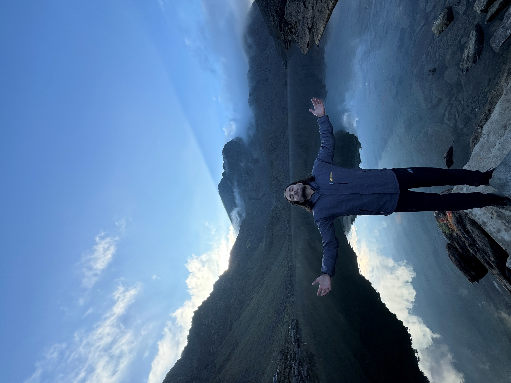

Personal Website
A personal corner of the internet for travel blogs, cricket data and things I find worth putting into words.

I'm Santosh Katel based in Bhaktapur, Nepal. I spend my time writing about the things I care about from the data driven strategy of cricket to the stories found while traveling across the Himalayas and beyond. For me the world is best understood through exploration and analysis. When I'm not on the road or watching a match, I'm busy building small projects on the internet that bring those ideas and experiences to life.
"Cricket is not just a sport in Nepal — it's a story still being written."
One of those projects is the NPL Player Stats site a searchable database I built to track every player across the Nepal Premier League 2024 and 2025 seasons. It brings together over 190 players, documenting every batting and bowling figure in one accessible place to help fans and analysts dive deeper into the game.
I also write a personal blog where I put down thoughts on cricket, technology, travel, and whatever else catches my attention. No schedule, no algorithm just writing when something feels worth saying.
If you want to get in touch, send me an email. I read everything.